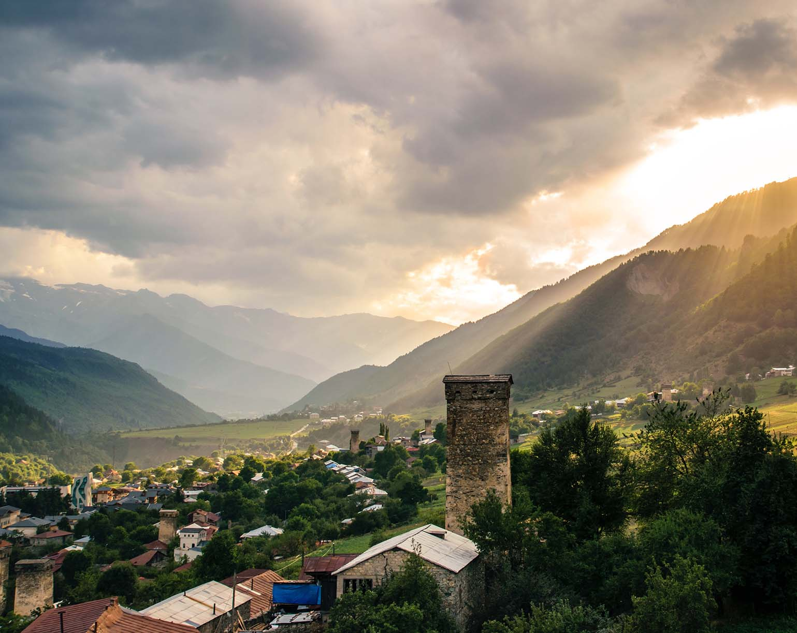
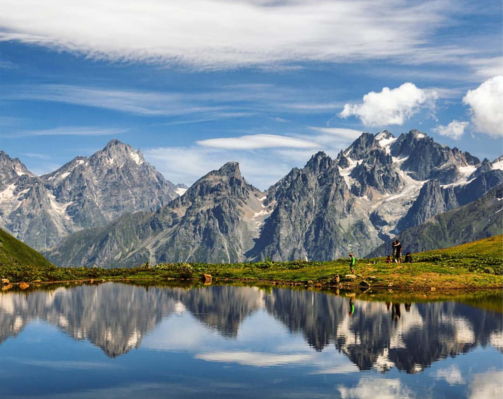

Сванетия
ХочА ладАгх! Говорят, кто не побывал в Сванетии, тот не видел Грузии. Конечно, это слишком смелое заявление, так как Грузия широка и многообразна, однако Сванетия — место совершенно уникальное и особенное.
Сванетия — регион на северо-западе Грузии, знаменитый многовековыми сванскими башнями, горами, озерами и непосредственно местными жителями — сванами.
Местия, Сванетия
Местия — крупнейший населенный пункт региона горная Сванетия в Грузии. В Местии на высоте 1400 м над уровнем моря постоянно проживают 2600 человек. В этом городе начинаются большинство треков в горы, к водопадам, ледникам и горным озерам.
Зимой и в марте Местия выглядит пустынной. По вечерам местные жители прячутся по домам, а на улицах можно встретить лишь пару собак да коров, коих тут великое множество.
Коровы гуляют сами по себе, самостоятельно ходят в горы и возвращаются домой в назначенный час. Правда, по словам местного жителя, иногда коровы приходят домой не в полном составе, так как в горах много медведей и волков, которые не прочь полакомиться свежим мясом.
Летом Сванетия оживает. Дороги наполняются велосипедистами, пешеходами, такси и маршрутками. На отдых в Сванетии приезжают туристы из Израиля, Италии, Германии, США, Франции, Украины, России, Беларуси и других стран.
Летом в Сванетии можно покататься на лошадях, отправиться в поход в горы, познакомиться с другими туристами, в том числе иностранцами.
Местия, Сванетия
Местия — крупнейший населенный пункт региона горная Сванетия в Грузии. В Местии на высоте 1400 м над уровнем моря постоянно проживают 2600 человек. В этом городе начинаются большинство треков в горы, к водопадам, ледникам и горным озерам.
Зимой и в марте Местия выглядит пустынной. По вечерам местные жители прячутся по домам, а на улицах можно встретить лишь пару собак да коров, коих тут великое множество.
Коровы гуляют сами по себе, самостоятельно ходят в горы и возвращаются домой в назначенный час. Правда, по словам местного жителя, иногда коровы приходят домой не в полном составе, так как в горах много медведей и волков, которые не прочь полакомиться свежим мясом.
Летом Сванетия оживает. Дороги наполняются велосипедистами, пешеходами, такси и маршрутками. На отдых в Сванетии приезжают туристы из Израиля, Италии, Германии, США, Франции, Украины, России, Беларуси и других стран.
Летом в Сванетии можно покататься на лошадях, отправиться в поход в горы, познакомиться с другими туристами, в том числе иностранцами.